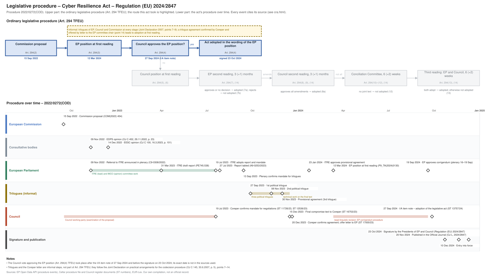

← All procedures · Regulation timeline
Procedure 2022/0272(COD), completed. Drawing: SVG · PNG · PDF (A3) · draw.io

| Date | Actor | Event | Document | Source |
|---|---|---|---|---|
| 2022-09-15 | European Commission | Commission proposal – COM(2022) 454, based on Art. 114 TFEU (Art. 294(2) TFEU) | COM(2022) 454 | Cellar (CELEX 52022PC0454) |
| 2022-11-09 | Consultative bodies | EDPS opinion | OJ C 452, 29.11.2022, p. 23 | Recital 130 CRA; Council I/A item note ST 13757/24, point 2 |
| 2022-11-09 | European Parliament | Referral to ITRE announced in plenary | C9-0308/2022 | EP Open Data API, procedure 2022-0272 |
| 2022-12-14 | Consultative bodies | EESC opinion | OJ C 100, 16.3.2023, p. 101 | Cellar (CELEX 52022AE4103); ST 13757/24, point 3 |
| 2023-03-31 | European Parliament | ITRE draft report | PE745.538 | EP Open Data API (ITRE-PR-745538) |
| 2023-07-19 | Council | Coreper confirms mandate for negotiations | ST 11726/23, ST 12536/23 | Council outcome of proceedings ST 12536/23 |
| 2023-07-19 | European Parliament | ITRE adopts report and mandate | EP Open Data API (COMMITTEE_ADOPTING_REPORT) | |
| 2023-07-27 | European Parliament | Report tabled | A9-0253/2023 | EP Open Data API (TABLING_PLENARY) |
| 2023-09-13 | European Parliament | Plenary confirms mandate for trilogues | EP Open Data API (PLENARY_ENDORSE_COMMITTEE_INTERINSTITUTIONAL_NEGOTIATIONS) | |
| 2023-09-27 | Trilogues (informal) | 1st political trilogue | Council note ST 16753/23, point 6 | |
| 2023-11-08 | Trilogues (informal) | 2nd political trilogue | Council note ST 16753/23, point 6 | |
| 2023-11-30 | Trilogues (informal) | Provisional agreement (3rd trilogue) | Council note ST 16753/23, points 6–7; ST 17000/23 | |
| 2023-12-15 | Council | Final compromise text to Coreper | ST 16753/23 | Council note ST 16753/23 (dated 15 Dec 2023) |
| 2023-12-20 | Council | Coreper confirms agreement; offer letter to EP – Coreper confirmed the compromise text of 30 Nov 2023 and authorised the Presidency to send the offer letter to Parliament (Joint Declaration 2007, point 14) | ST 17000/23 | Council note ST 17000/23 |
| 2024-01-23 | European Parliament | ITRE approves provisional agreement | EP Open Data API (COMMITTEE_APPROVE_PROVISIONAL_AGREEMENT) | |
| 2024-03-12 | European Parliament | EP position at first reading – adopted without legal-linguistic revision (Art. 294(3) TFEU) | P9_TA(2024)0130 | Cellar (CELEX 52024AP0130); EP Open Data API |
| 2024-09-19 | European Parliament | EP approves corrigendum (plenary 16–19 Sep) | Council I/A item note ST 13757/24, point 5 | |
| 2024-09-27 | Council | I/A item note – adoption of the legislative act – Coreper asked to suggest that the Council approve the EP position (PE-CONS 100/23) (Art. 294(4) TFEU) | ST 13757/24 | Council I/A item note ST 13757/24 |
| 2024-10-23 | Signature and publication | Signature by the Presidents of EP and Council | Regulation (EU) 2024/2847 | Cellar (resource_legal_date_signature) |
| 2024-11-20 | Signature and publication | Published in the Official Journal | OJ L, 2024/2847 | Cellar |
| 2024-12-10 | Signature and publication | Entry into force (Art. 71(1) CRA) | Art. 71(1) CRA; Cellar |
| Date | Document | Kind | Subject |
|---|---|---|---|
| 2022-12-14 | CELEX 52022AE4103 | opinion | Opinion of the European Economic and Social Committee on ‘Proposal for a Regulation of the European Parliament and of the Council on horizontal cybersecurity … |
| 2023-03-31 | PE742.490 | ep-draft-opinion | DRAFT OPINION on the proposal for a regulation of the European Parliament and of the Council on Horizontal cybersecurity requirements for products with digital … |
| 2023-03-31 | PE745.538 | ep-draft-report | DRAFT REPORT on the proposal for a regulation of the European Parliament and of the Council on horizontal cybersecurity requirements for products with digital … |
| 2023-06-30 | PE742.490 | ep-opinion | OPINION on the proposal for a regulation of the European Parliament and of the Council on Horizontal cybersecurity requirements for products with digital … |
| 2023-07-14 | ST 11726/23 | council-position | Mandate for negotiations with the European Parliament |
| 2023-07-27 | A9-0253/2023 | ep-report | REPORT on the proposal for a regulation of the European Parliament and of the Council on horizontal cybersecurity requirements for products with digital … |
| 2023-08-31 | ST 12536/23 | council-position | Mandate for negotiations with the European Parliament |
| 2023-12-18 | ST 16753/23 | agreed-text | Regulation of the European Parliament and of the Council on horizontal cybersecurity requirements for products with digital elements and amending Regulation … |
| 2023-12-20 | PE758.004 | agreed-text | PROVISIONAL AGREEMENT RESULTING FROM INTERINSTITUTIONAL NEGOTIATIONS Proposal for a regulation of the European Parliament and of the Council on horizontal … |
| 2024-03-12 | P9_TA(2024)0130 | ep-position | Cyber Resilience Act |
{kind=link}
{kind=link}